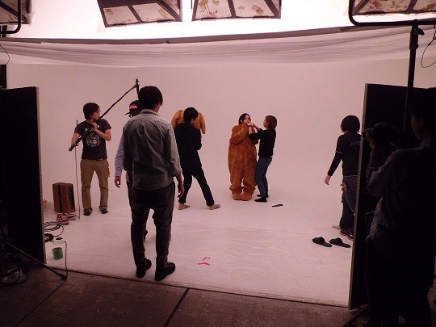
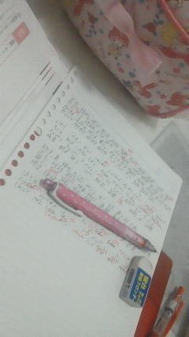
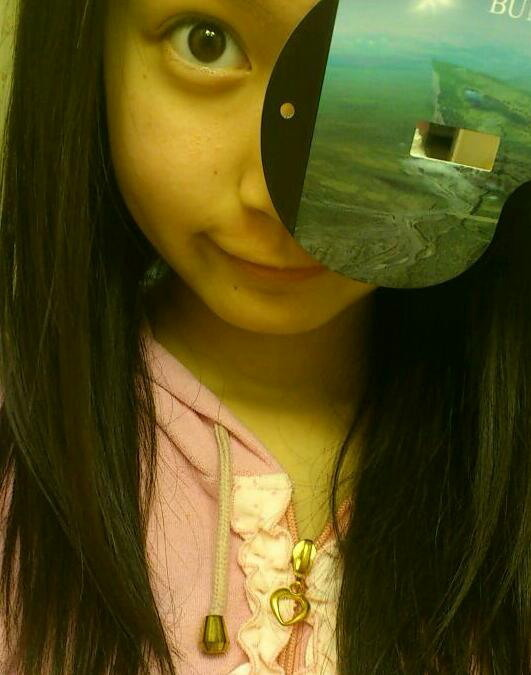
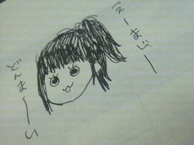
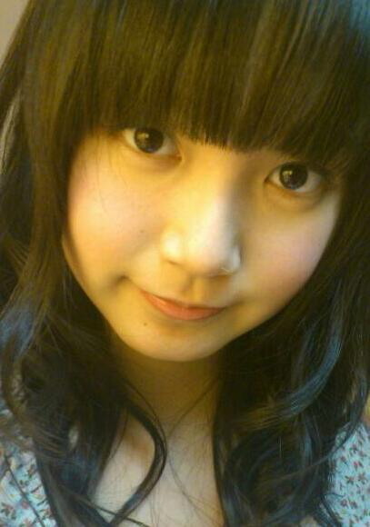
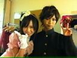

返回列表-BACK TO INDEX

リクエストにお答えして、今日の二行日記。
世界史と物理のテストがんばった。
ままとランチした。お昼寝した。夜は数学頑張る!
ふぁみりーさんひめきゅんさん
いつもありがとーう＼(^O^)／!
400 個別握手会当たったので楽しみにしてますね
個別握手会当たったので楽しみにしてますね
緊張せずに喋れるコツとかありますか？
緊張しぃなひめたんにいい答えを期待しないでほしいけどー、
とにかく、自分の妹さんとか兄弟さんと話すときって緊張せんよね!
そのノリで来てくれたらおっけーだと思う∩^ω^∩★
401握手券無事当選したよひめたんと何はなそうかなぁ〜
ノープランで行っても大丈夫(´・ω・`)?←
ひめたんだってノープランだから大丈夫(`・ω・')←え
...。間違えた
ひめたんがいろいろ話題考えとくから大丈夫っ!!!!!
402決済も済ませて来たよ。これって、ひめたん喜ぶかな?花奈?(笑)
喜ぶカナ?喜ぶかもしれない
ウソ喜ぶ＼(^∀^)／!!!
403個別握手会って初めてなんですけど、流れとか、
やってはいけないこと等、注意点を教えて下さい、
ざっくりで構いませんから。
えーっと、それがひめたんにもよくわからんのんよね(>_<)
ひめたんからみなさんにお願い!
握手会経験者の方ー?握手会の注意点やポイントがあったら教えて下さいっ!!!先輩!!!
404もう自分の名前は覚えてもらえたかなぁ!?
いつもコメントくれるひめきゅんさんなら自信ありますよー♪
握手会とか、会う機会があった時に確かめてみてー＼(^^)／★
405これからも握手に行き続けて
ひめたんの成長を身近で感じていこうと思ってるんだけど良いかな〜?笑
んあーそうしてくださいっ
ほんまに家族みたいぢゃね(*^^*)
ひめたんね、もう背は伸びんと思うけど、頑張って成長するね!
406２次重視なのでこれからが本番です。
ひめたんに応援もらえたらすごい頑張れる気がしますのでお願いします!!
とりあえずセンターお疲れ様でした(`・・)ゞ
すごーいほとんどマルじゃないですかー♪
このままトップ成績目指して頑張って下さい!!!
新入学代表挨拶、かっこいいだろうなー(//ω//)
407ひめたんが思う自分の性格は？
えー自分どんな性格かわからんけれどもー、
うん。基本きゃぴきゃぴしてて、でも肝心な時はちゃんとやり遂げるって子(ω)
自分で言っちゃう

わら
408ブログの題名の顔文字 (*ゝω・*)ノ 『ノ』の部分が、その５０までは全角、
５１からは半角になっているけど、ひめたんは気付いてた？
そーう。それね。
51の時に間違えて半角になっちゃったから
もうしばらくは半角突き通そっかなって思ったの(ω)
でもひめたん的に全角のが好きぢゃけ、
キリがよくなったら全角に戻します//
てかよー細かいとこまで見とるね(^^)!すごーい♪
409そういえば質問なんですが、
広島時代のperfumeってどういう存在だったんですか。
みんなの憧れだったのかなあ
そうですね。もちろん憧れだったですよ。
残念ながらひめたんとPerfumeさんは在籍期間がかぶらなかったけど、
３人とも謙虚で努力家で、って有名ですよねー？
それは昔から変わってないんだと思う(*^^*)
だからたくさんの方から愛されるんですよね。
ひめたんも見習わねば(`・・)ゝ
410ひめたんは、自分が大人になったかな?と感じることは何かありますか?
ひとりで東京来たよ自分っみたいな
ひとりで時間つぶしてる自分っみたいな
ちっちゃい子が電車で泣いてるのみて心がほっこりする自分っみたいな
東京来てから会社に行くまでのあいだに、大人になったなっていっぱい思う(^^)
みんなと合流したら話は別です(。・ω・。)けろ
411ペットはかってますか??(｀_´)ゞ
残念ながら飼ってないー。飼いたいけど飼えないんです。
いつかヨーキーかチワワ飼うってちっちゃい時から言っとるずっと。
今までは金魚とかハムスターとかおうちにいたことありますよ♪
412ひめたんは猫派、犬派？
ひめたん犬派(^・エ・)♪
...てらりん(永島聖羅chan)に言ったら
「へーひめたん猫派だと思ったー。」って。
ぢゃけ猫派ってことで=^・ω・^=
413ひめたんはマツダスタジアムいったことある?
試合は見たことないけど行ったことある!
球場ができてすぐの試合ない解放日に球場に遊びに行ったんです♪
今度は試合観戦にも行ってみたいなールールまったくわからんけどー(ω)←
(*´・ω・*)ひめたん
2012/05/23 20:12｜
1日遅れちゃったけど、5月21日
みくもってぃお誕生日おめでとうー(*^^*)♪
ひめたんは明日からのテストに向けて頑張ってます!
ひめきゅんのみなさん、いつもコメントありがとーう

385 放送部ってなにやるん？
放送部ってなにやるん？
コンクールみたいなのあるのかな？
コンクール。ありますね(・∀・)
校内放送、掃除の時の音楽、番組作りなどなど★
楽しかった。引退したくなかった。帰りたいー!
386やってみたいアルバイトは？
ちっちゃい頃からパン屋さんに憧れてる(*^^*)
ひめたんパン屋さんが大好きなんですよ!
あんな美味しそうなパンと一緒にずっと居たいと思いませんかー？
あとリアルに、高校生なったらレジ打ちしたかったー。
ピっピって。楽しそーう(o>ω<o)
387ひめたんの巻き髪めっちゃ可愛いわー自分でまいてるん？
いやいやーヘアメイクさんに巻いてもらいましたよ^^
これに乃木坂の新衣装着て昨日はばっちし撮影してまいりました(`・・)ゞ
ツインより巻いた方がいいーってメンバーの声が多かったのよねこれが。
みなさんどっち派ですかー？
388ひめたんはサンフレッチェ広島っていうサッカーチーム知ってる？
もちろんもちろん(^ω^)
...ゆーて全然詳しくないです。
マスコットのあの子可愛いと思うわら
もっと勉強して出直してきますー!!!!!
389ほんっとにお疲れ様です!!!ご褒美に何か買ってあげる(-^○^-)笑
今欲しいもんとかある〜!?!?というか今度ディズニー行くかもだから、
お土産で買って来て欲しいもの!!
えーほんとにー？ありがとうございます(。・ω・。)
それならぎゅーってできるサイズの可愛いぬいぐるみがほしい!!!
最近人肌恋しくて←え
890好きな映画は？
いっちゃん最近だと、乃木坂の研修の時にＡＫＢさんのドキュメンタリー映画見たかな。
あーれは刺激になりましたと思います!
レンタルってやっとんかな？オススメします♪
391ひめたんのすぐ上に、写ってはいけないもの(色々な意味で。)が、
写っていませんか？
問題なければ良いのですが...。
ひめたん(*ゝω・*)ノその56のあの写メのことですねー
いやむしろ可愛いからいいかなーと思ったり∩^ω^∩
もちろんちゃーんと本人には許可取ってますよっ
ちなみに誰かわかりますか？答えは後日っ★
393財布を落としました。それをひめたんが見てました。
財布の中を見たらひめたんの写真と現金100万円くらい入っていました。
財布を落とした事に気付いていません。
さて、ひめたんどうする？※面白い答えを期待しますW
いやーん面白さ求めんでー!!!!!
リアルに答えると、まずお財布の中身は見ないので
ひめたんの写真詰め込んでも大丈夫(`・ω・')わら
見たって設定なら...
とりあえず必死で追い掛けるかなー。足遅いから転けないといいなー。
んで届けたのちに、
「...パフェ食べたいなー(д)」とかね♪ふふふ
ひめたんの写真の映りがイマイチなら、こっそりトレードしておくのでお許しを。
394姫ちゃん的にDDってどうなんでしょう...応援してていいのかな...
395個別でひめたん取ったよー!もっといっぱい取った方がいい？笑
他のメンバー行こうか迷ってるんだよねー笑
ひめたんのことちょっとでも気にしてくださってるってだけで嬉しい(ω)
だから好きな子は何人でも応援してあげてください!
そっからひめたん単推しにさせるのがひめたんのお仕事ですから(`・・')どやっ
396ひめたんー(^O^)／名古屋個別取ろうかと思うんだけど、
どんなこと話そう？
んーどんなこと話そっかなー♪
そうだよね。聞きたいことは全部ブログで質問しとるもんね。
何でもいいよ？にらめっこでもしりとりでも指相撲でも何でも!
3979枚じゃ少ないかなー？？？
(。・ω・。)
398 ひめたん握手何回も行ったらしつこい?
ひめたん握手何回も行ったらしつこい?
まったくしつこくないないー
むしろ何回でもきてほしい!
だって。だってだってだって。
寂しいじゃん(*/ω＼*)？
399握手会部活で行けなくなったら怒っちゃう?(;'д`)
泣いちゃうーううぅ('・д・)

(*´・ω・*)ひめたん
2012/05/22 00:24｜

374 「ぐるぐるカーテン」を聞いた感想は?
「ぐるぐるカーテン」を聞いた感想は?
「ぐるぐるカーテン」は乃木坂46らしい曲だと思う!メロディは落ち着いてて、かわいらしくて、
歌詞はおんなのこおんなのこしてる(*^^*)
学校生活がテーマなんだよね。等身大な感じが好きですね。
明治手作りチョコレートのTVＣＭソングですよー♪
375乃木坂ってどこ見たけどカップリング曲に衝撃受けたよ〜
初めて聴いた時どうだった？？
376デビューシングルのカップリング曲の
「会いたかったかもしれない」を聴いてどう思った?
「会いたかった」ははひめたんが
乃木坂46スターティングメンバーオーディションの時に
歌って踊った曲なのー!
思い出深いし、未だによく歌うし、大好きな曲です(*^^*)
だから「会いたかったかもしれない」聴いた時はめっちゃびっくりしたー!!!
「会いたかった」はもちろん好きだけど、でも「会いたかったかもしれない」も
たくさんの人に愛されたらいいなって思います♪
...歌いたかったかもしれない('・ω・`)
377ひめにょんが"ぐるぐるカーテン♪"というタイトルだけを聞いた時、
自分ではどう思ったか、エピソードがあったら教えて欲しいな!
「え？」
ってなりますよね最初は。
なんかめっちゃ単純だしーって思った(^^)わら
みゅみゅ(若月佑美chan)は「この曲、これからぐるカーとか呼ばれるんだろうな(ω)」
って言っとった。
ぐるカー。可愛いぢゃん(o>ω<o)!
378チョコが好きなら、今回の明治とのタイアップはめっちゃ嬉しいのかな?
めーちゃーめーちゃ嬉しいですよ(ω)♪
あのね、ろってぃー(川村真洋chan)すごいんよ!
乃木坂の最終オーデの自己PRで自分の夢を語った中で、
「いつかチョコレートのＣＭに出ることが夢です!」って言っとったんよね。
マネージャーさんはドキッとしたらしいー
378ひめたん今年のバレンタインは何作る予定?
ひめたんのオススメは２色のマカロンです(^^)/
ひめたんもマカロン作ったことあるけど、ちょい難しいんよねー
でも挑戦してみて下さい!
デコチョコは簡単で美味しいよー。
デコデコ〜♪←ひなちま（樋口日奈chan）の真似(∀)わら
308ひめたんはバレンタインにチョコを渡す予定はあるのかな?
もちろんもちろん明治ミルチで手作りしますよ!
...だけど乃木坂のみんな美意識が強いからなー受け取ってくれるか心配('ω`)
学校の子はみんな受験生モード全快ぢゃけど
空気ぶち壊して明治のミルチ配ってきます(`・・)ゞ
381ひめたんみたいな妹が欲しいです(*^ω^*)
うちの妹になってください!←
いいの？
ひめたんのお姉ちゃんになってくれるのー？
もちろんだよお姉ちゃんっ∩^ω^∩♪
382 ひめたん、元気になって良かったね
ひめたん、元気になって良かったね
メンバーみんなお疲れ、みたいだけど大丈夫なの???
みんな大変そう('`)←
でもみんなと会うことで元気いっぱいになるんだろうから
頑張らんにゃね!
とりあえずこの前で一段落ついた感はありますね(・∀・)
383お母さんの愛情たっぷりの料理で育ったひめたんは、
東京でなに食べているのですか?
日による。ほんとーうに日による。気分によります。
東京はご飯も美味しいからねー(^^)
ちゃんと気を使ってるつもりですよー♪
384 風邪ひいた時、中元家ではどうするの?
風邪ひいた時、中元家ではどうするの?
広島独特の治し方が、あるんでしょうか?
いやいやそんなことないですよ(-ω-)
体をあっためて、あとはあっさり自然治癒に任せよう!って感じです←
ひめたんめったに風邪引かないもんなー。
320 ファンという名のお兄ちゃん?も乃木坂入れて〜
ファンという名のお兄ちゃん?も乃木坂入れて〜
うぇるかんむ(o>ω<o)♪
321 ひめたんは、コメントできるのにサボってるふぁむに
ひめたんは、コメントできるのにサボってるふぁむに
何か言いたいことありますか?(笑)
いやーん寂しーい!!!
コメントサボったらひめたん悲しいじゃないですかー。
ひめたんブログサボってもいいのー(>_<)？
...とかゆって。わら
(*´・ω・*)ひめたん
2012/05/21 00:00｜
らりんー!
お誕生日おめでとう(*^^*)
358 今まで自撮りするときは「人物」モードだったんですか？？
今まで自撮りするときは「人物」モードだったんですか？？
それとも、他の撮影モードで撮られてたんですか？？
今までずっと
「人物」モードの明るさ＋２!
359ひめたん、新幹線や飛行機に乗る時は、窓側派？通路側派？
どっちが好きですか？
ひめたんも通路側に誰もいない窓側派!
景色を楽しもうと思いつつ、結局寝ちゃうんだこれが。
360ブログの最後に「ばいばいひめたん」て使って
ゆーわけで...。
ばいばいひめたそっ(。・ω・。)/"
361あの今日わたし誕生日なので
ひめたんに祝ってもらいたいです☆"
お誕生日おめでとうございますー!!!
何をして1日過ごしたんかな？何か特別なことしたんかなー？
素敵な1年になりますように(・v・)/!
幸せがいっぱい訪れるってひめたんが予言する!
362『食後はコーヒーと紅茶がございますがどちらが宜しいですか？』
とレストランで言われたらひめたんはどっち？？
紅茶派かなー。
紅茶だったらミルクと砂糖をいっぱい飲める(^^)
コーヒーだったら牛乳いっぱいいれてコーヒー牛乳みたいになったら飲める(^^)
その前に「オレンジジュースってないですかね...？」って聞いてみる。
363ひめたんって何の雑誌読んでるのー？
自分ではあんま買わないんだけど
妹がseventeenとかnon-no読んでるから、たまに借りるー♪
364好きな果物とかありますか？？
酸っぱい系でなければ何でも好き(*^^*)
365ひめたん、受験はいつ?
1月の終わりかなー
ってもうすぐぢゃ(・o・ノ)ノ!
366てかさぁひめたん、随分ひなたんと仲良しなんだけど、
乃木坂メンバーでいちばん仲良しなのかな？
えーみんなと仲良しよお♪
いちばんなんて決めれんー。
中３トリオは相変わらず熱いですよ＼(∀)／
367ひめたんのスクール時代のエピソードも聞きたいな！
スクール時代のエピソードを語りだしたら止まらないですよほんとに。
このブログでもちょいちょい話題になるからチェックしてみて下さいね★
いつか機会があったら特集組みたい。うん!
368乃木坂のひめたんといえば！！？って言えるトレードマークありますか？
それが、固定の髪型はないし、決めゼリフはないし、なんだろ(・c_・)
とりあえずパフォーマンス見てほしいかなー。
トークもなかなか好き(*^^*)
369すずかちゃん、ひめかちゃんと名前がカで終わるのは、
偶然ですか？それとも親がカが好きとかあるんですか？
姉さんにカをつけたからひめもすずもカがついちゃったらしいですー。
370乃木坂ってどこが 本拠地なんですか?
乃木坂46ってくらいだから乃木坂になるんかなー？
実際乃木坂はいろんな思い出がありますよ!
結成オーディション、初めてのイベント、2012年初のイベント。
残念ながら乃木坂に行っても劇場はないのです('・ω・`)
371ななせまる（西野七瀬ちゃん）、見た目はおとなしいコかと思ったけど、
内に秘めていて努力家な女の子だよね。
イラストもうまいしさぁ。ひめたん、そう思わない？
ななせまるかわいーいっ
えへ←
乃木坂始動したての頃からよく一緒にお泊まりしたもんだっ
ななせまる（西野七瀬chan）がひめたんの似顔絵書いたら、「ω」の口してるのー
それがみんないわく、めっちゃ似てるんだとか。
ななせまる大好きよーお(*/ω＼*)

372チョコレート色のブレザー似合ってた(*´ω｀*)
記者会見の時のエピソードみたいなのがあったら教えて欲しいです！
エピソード。
明治の方が楽屋に来ていただいて一人ずつ挨拶した時のこと。
みんな「学年・名前」言うなかでひめたん一人だけ
「中学３年生の中元日芽香です。ひめたんって呼んで下さい」発言。
楽屋が和やかな雰囲気に包まれたとさ。わら
373ひめたんのバレンタインDayの思い出とかある
そうぢゃねー(^^)
ひめたんの仲良しさん全員にお菓子配ろうと思ったんよ。
ぢゃけ去年のバレンタインは夜中の３時まで料理やらラッピングやら頑張って
翌朝の地元のイベントに死にそうになりながら出かけて行った思い出がある(-ω-)
でもみんなとチョコ交換したら目覚めたよー♪

(*´・ω・*)ひめたん
2012/05/19 01:16｜

336 コメ返してもらえると飛び跳ねて喜んでます(゜▽゜*)
コメ返してもらえると飛び跳ねて喜んでます(゜▽゜*)
ほんまにー？一緒ぢゃーあ!!!
ひめたんもコメントもらえると飛び跳ねて喜んでます(゜▽゜*)
337乃木メンの意外な性格や姫様が他のメンバーに言われた
意外なことを教えて！！！
乃木メンの意外な性格...。
みんな意外すぎて言えない
とかゆーて(//ω//)わら
言いだしたらとまらなくなるから言わないってことにしておきましょー？
みんなの日記見よったら、ちょいちょい本性が。うん。
338 ひめたんはお母さんの料理で何が一番好きですかー？？
ひめたんはお母さんの料理で何が一番好きですかー？？
んーいちばんと言われたら難しいけどー、
ハンバーグとか。
アップルパイとか。
チーズグラタンとか。
欧米かーなんて言わせない(o>ω<o)!
339ひめたんはこしあん派？つぶあん派？
こしあんorつぶあんって聞かれたらつぶあん派かなー。
あんこよりクリームとかチョコの方が好きですひめたん(*^^*)
340部活はやってる？
元放送部部長(ω)ゝきらーん
中３は夏で引退しましたとさ。
341ひめたんの性格を簡単に表すと？
甘いと見せかけてちょっぴり辛い(笑)
いわゆる甘辛ミックス♪♪
Byあみあみ(能條愛未chan）
ひめかはしっかり者です^^♪アイドルにすごく適した人です
Byろってぃー（川村真洋chan）
妹ーとか言って
ななよりしっかりしてる。
朝起こしてくれる
ななのモノマネしてくるけどな、似てない！
そこが可愛いひめたん
Byななせまる（西野七瀬chan）
だそうです(^^)/
342最近ひめたんらしくないってどういうことかな？
ブログは十分にひめたんテイストいっぱいだよ！
いやーんありがとうございます♪♪
343とりあえず高校受かった！って報告をしに行く（笑）
言うよねー♪
て、ひめたんも高校受験ぢゃ!!
お互い頑張ろうおー!
345個別握手会、ひめたんのところに行くから、あだ名つけてね(-^〇^-)
ありがとうございますー!!!
そーいえば、1回目の握手会の抽選結果がでたって聞きましたよ♪
個別握手会楽しみです(ω)/
346 ひめたんは風邪対策なにかしてるの？
ひめたんは風邪対策なにかしてるの？
マスクとかマスクとか、マスクとかね。
ゆーわけでひめたん、今日はマスクをストックしてきます(`・・)ゝ
みなさん風邪には気をつけてくださいねー？
347広島のお隣の岡山県住みなんだけど、「ぼっけー」って方言知ってる？
んーわからん...。
どーゆーときに使うんですかー？
348ひめたんが普段よくする髪型は？？？
学校行く時は基本低めのツインテ(∀)♪
乃木メンと会うときはもーちょっと頑張るかな。
349握手会に行って、ひめたんがワクワクするような話題はなんですか？？？
お話しできるだけでわくわくするー(o>ω<o)
だから話題がなかったらひたすら握手しながらにこにこしてます♪
350ひめたんの趣味は(何をしてるときが楽しい)？
やっぱり音楽を聴いとる時かな(ω)
いっつも音楽プレーヤー持ち歩いてるし
充電切れたらテンションがくーんですもんっ
351ひめたんが大切にしてる言葉は？
「一期一会」
ひめたんが小６の時の先生が好きだった言葉です
みなさん意味知ってますかー？
352ゲームしたり、漫画読んだりする？
小学生の時はよくやっとったけど、最近あんまやらんー(>_<)
戦うのより、お友達増やしたり、犬育てたり、村作ったりするのが好きだったー
おうちに女の子ばっかりだからカナ？
353握手会、複数行っても大丈夫ですか？嫌ったりしませんか？
嫌うどころか好きになっちゃうー(//ω//)
何回でもお話ししたいから何回も来てね
待ってまーすっ!!!
354 ななせまるのモノマネをおねだりしたら・・・失敗する？？？
ななせまるのモノマネをおねだりしたら・・・失敗する？？？
355これはモノマネを握手会でやってもらうしか！！
356見たいっ♪ななせまるの物まね握手会でリクエストしてもいい？
357ひめたんのものマネみたいぞ握手会でお願いしちゃおっかな〜
ん〜〜〜〜〜〜〜ななせまる!!!!!
似てないって評判だけど、それでもひめたんは真似し続けます。わら
みたいですか？ななせまるふぁんのみなさんに怒られないかなー(ω)？
ちなみに本人は笑ってくれる^^
(*´・ω・*)ひめたん
2012/05/18 01:54｜
返回列表-BACK TO INDEX